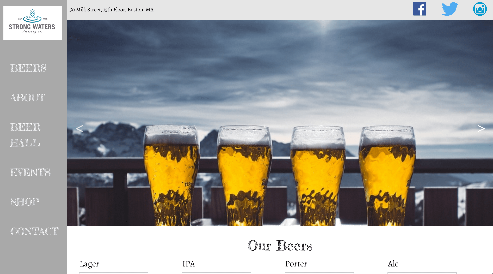

This project was to build a site for a made up brewery. The purpose was to get comfortable with using many different skills. I designed this site along with Christina Wiech and we each worked independently and pushed our work to github to put the whole thing together. We utilized foundation for the grid system, sass and koala to compile our css files in a more organized manner, and javascript was used to make the site more interactive. We researched other brewery sites and interviewed a few people to get a sense of what was most important and then began the wireframing and building process.


The building of the landing page was completed in a day. I used slick to create the slider that displays the three images on the main page. After creating the landing page we showed it to several people and made some changes based on their suggestions. Click the image below to view the StrongWaters Brewing Co. website that we created!
